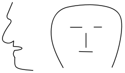
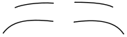
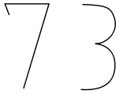

Беседа 2568 от 3877 · Беинса Дуно
Трите картини.
Отче наш.
„Духът Божий.“
В Евангелието на Йоанна е казано: „В начало бе Словото“.
Това е философската страна на въпроса. Всяко начало почва с Божественото. Божественото е начало на всичко. И след това ние идем до онова, което е станало чрез Словото; идем до човека, до създаването на човека. Вие не можете да знаете смисъла на вашя живот, ако не знаете това Начало. Едно просто изяснение: Всяко семе посято в земята, без слънчевата светлина и топлина не може да се прояви. Искам да кажа тук най-просто Истината. Служа си с едно сравнение: семенцето и слънчевите лъчи. У вас има едно желание да знаете. В какво седи знанието? Да знаеш, значи да направиш нещо. Какво можеш да направиш? Едно добро можеш да направиш. Какво е доброто? Какво може да направи една круша? Крушата ще роди круши. Сега разликата е, че човек спада към съвсем друг свят. Човек спада към мисловия свят. Човек не е едно същество от животинския свят. Със своето тяло той се намира между животните, но със своята мисъл той е един свят, който е недостъпен за животните. Някой път вие се поставяте в положението на животните и казвате: „Аз живея“. Ти не можеш да живееш, ако не познаваш това Начало! Някой може да каже: „Аз вярвам“. Но вярата е вече един вътрешен подтик. Ако кажеш, че имаш вяра и нямаш подтик, тогаз ти не си разбрал смисъла. Щом дойде вярата, тогаз в тебе има един велик подтик и ти не можеш да стоиш на едно място. Не можеш да бъдеш мъртъв. Умрелият човек съзнава, а хората казват, че е умрял. И той обикаля и не може да се прояви. Казват, че е отишъл при Господа. Могат да дават хиляди тълкувания, но този човек ако има вяра, може да оживее.
Ако в дадения случай се намирате в една мъчнотия, вие лесно можете да излезете, но само като вярвате, като имате вяра. Щом можеш да излезеш из мъчнотията, ти имаш вяра. Щом не можеш да излезеш из нея, ти нямаш вяра. Когато умрелият го носят в ковчега и пред него свещениците и му държат надгробни речи, никъде не е отишъл той. Че това е много материалистическо схващане, че отива при Бога. Ти като отидеш в църквата, ставаш ли набожен? Църквата е едно състояние вътрешно. Отвън има нещо на земята. Хората са направили едно здание на Земята, което са нарекли църква. И казват: „Човек трябва да ходи в църква“. Сега, другото сравнение е: Да допуснем, че тук е един университет. Като ходиш в университета и не слушаш професорите, какво ще научиш? Можеш да посещаваш първия факултет, втория, третия, но не слушаш и казваш: „Аз съм ходил в университета“.
Ти казваш: „Аз съм слушал Учителя“. И привеждаш един пример. Но в моите беседи всеки един пример е един метод за работа. А пък вие ще ги приведете, ще се посмеете малко. Може би е смешно. Представете си, че приведа следния пример: Един момък се запознал с една високообразована мома. Не е важно къде – в Англия, Франция и пр. Мога да ви кажа къде, но само примера ще приведа. Той много мисли, осторожно, предпазливо я изпитва. Изпитва я, дали ще може да живее с нея. Той я обича, но не се решава да ѝ каже, че я обича. Страх го е. Па и на нея е неловко да му каже: „Прояви се де!“ Той не се проявява. Най-после тя употребява една хитрина. Направя си един друг момък от восък. Много хубав, красив, с мустачки. Донасят го в къщи, тя го туря на стол при прозореца, край който минава нейният възлюблен. И тя говори с него, тя го туря така, като че приказва с него. И онзи момък казал: „Моля, не давай никакво обещание. Аз реших вече тая работа!“
Кой реши въпроса, кажете ми? Беше ли така, имаше ли тя някакъв друг кандидат? Восъчният кандидат накара онзи момък да се реши да каже, че ще живеят заедно. Сега това положение право ли е? Преведете сега тая восъчната фигура. Това е сега един метод за работа. На какво ще уподобите в живота този восъчен момък? Ще ви дам друго обяснение. Представете си, че тая мома е бледна, малко жълта, не е толкоз хубава. Той не се решава, но представете си, че един ден на тая восъчна картина се паднат два милиона. И тя, восъчната картина, стане малко по-угледна. И има защо тогаз да живееш с нея, два милиона има тя. Добре, но тук животът има една материална основа. Хубаво е донякъде. Но представете си, че тия два милиона ти ги вземат и като мома останеш без восъчния човек.
Оная мома е скрила. Тя казала на онзи момък: „Ако ти беше закъснял с един ден, аз с моя восъчен щях да замина на разходка някъде!“ Има ли тук някаква реалност, кажете ми.
Някой път вие искате да повярвате дали има друг свят или не. Че какъв свят искате вие? Вие нали живеете в един човешки свят? Какъв свят друг търсите освен човешкия свят? Едно просто обяснение. Фактът е следният: Ти няма какво да търсиш друг свят, но трябва да разбереш света, в който ти живееш. Ти си вече и в онзи свят и в този свят, едновременно. Но ти си в корените на едно растение. Едно същество може да живее в два свята. Растението живее в два свята: корените живеят в един свят, а пък клоните – в друг свят. Корените живеят в по-гъста материя, а клонищата – в по-рядка. Да отидем в онзи свят разбираме да отидем със соковете от корена нагоре. У растенията изобщо плодовете се образуват над Земята. Но у някои растения плодовете могат да се образуват и в Земята. За растенията онзи свят е светът, в който се образуват плодовете. Вие искате да познаете онзи свят. Онзи свят е мястото, в което се разбирате с хората. Онзи свят е мястото, дето с всекиго можеш да се разбереш и дето всеки може да ти бъде обичен. Тук не е така. В онзи свят с всекиго можеш да се разбереш и ти можеш да влезеш в неговото положение. А пък в този свят не можеш да влезеш в положението му. Мъртвият човек не може да влезе в положението ти, а пък живият може. Живият може да погребе мъртвия, а пък мъртвия не може да гледа живия. Един извод: Щом ти не можеш да вършиш една работа, ти си мъртъв. Ти казваш: „Аз вярвам“. Мен ми е безразлично в какво вярваш. Но и този умрелият вярва, но той не е в състояние да стане и да каже, че живее. И ако вас най-малките мъчнотии ви спъват, тогаз какво? Аз ви гледам, че за нищо и никаква мъчнотия вие плачете. Нямам нищо против плача, но аз разбирам живота. Животът започва с нереалното. Господ каза в рая на хората: „Драми и комедии ще играете, но трагедии – не! Не се позволява да играете трагедия в рая“. Но като дойде онзи адепт той каза: „Не, аз имам една нова трагедия, нещо хубаво. Вие с Адама ще вземете първите роли и ще играете. Те са отлични роли. И вие като играете тия роли, ще станете като Бога“. Ева каза: „Така ли? Нали ни каза Господ да играем само драми и комедии, а пък трагедии по никой начин?“
Ако вие играете една трагедия, кой е виноват? Господ ти каза: „Да не играеш трагедии, но само драми да играеш!“ Ти казваш: „Че представете си, аз много страдам!“ Смешно е, че страдаш! Ти на сцената представляваш, че някой умира. Умираш 10 пъти, пак оживявавш. Цар си. За колко време си цар? За 3–4 часа. На сцената ти си цар, съдия, учен, адвокат, прокурор, поет. Това реално ли е? Сега вие сте слушатели. Ние не играем роли тук, но аз обяснявам. Всеки един от вас е нещастен, понеже не можете да си играете ролите. Да кажем, че вие пишете любовно писмо някому: „Откак ви видях за пръв път!“ – Реално ли е, че си я видял за прав път? Нищо не си видял! Това е писано в драмата. Ти казваш: „Трепнало ми е сърцето“. Никакво сърце не ти е трепнало. Тя е оженена, и на сцената тя се жени за някого! Във всяко представление ние се женим за някого. Питам: „Реално ли е това!“ Това е естествено, понеже не е реално. Ако беше реално, щеше да бъде друго. Не е реално това положение. Та сега вие играете роли като актьори. Вие казвате: „Аз съм голям грешник“. Така е писано в книгата. Вие знаете ли кой е произхода на греха? Не го знаете. Вие разбирате за греха толкоз, колкото един стар изповедник във Варненско. Мен ми го разправяше това един свещеник дошъл от Света гора. Той никога не бил пил. Това било по Великден. Млади моми отивали да се изповядат тогаз. Той бил стар, на 80 години. Той се напил. Идват момите да се изповядват. И той носи една голяма пила и казва: „Ще ви изтрия всичките ви грехове“. Виното влязло в него и внесе едно ново разбиране. Той искал да им каже: „Вие сте млади моми. Нямате никакви грехове. Елате да изтрия вашите заблуждения. Идете да живеете в света, както Господ дал“. Добре разбирал е старецът. Не можете ли и вие да се изтриете с вашите пили? Целта ми е следната: Вие имате едно разбиране. Да дойдете до реалния живот. Има неща, които не са реални. Вие сте длъжни да играете тая роля. Вие мислите, че сте някой свят човек. Мислиш, че си учен човек. Ти си учил 4 години в първоначалното училище, 3 години в прогимназията, 5 години в гимназията, 4 години в университета и 2 години специализация. И най-сетне си забиете един гвоздей в главата, че си учен човек. Не мисли, че си учен човек! Учен човек си, а пък утре дойде една хрема, хване тебе, учения човек! Гледам сега и папата, който минава за заместник на Христа. Идват лекарите, тия невежите, които той би афоресал, четат му лекции, какви лекарства как да вземе. Че какъв папа е той? Никакъв папа не е той! Като дойде една болест, тя идва да ви покаже вашето невежество. Търсиш един лекар. Казваш: „Той е грешен!“ Но ти търсиш помощта от един грешник. На този лекар ще му проповядваш, че трябва да се спаси, че не е праведен, а пък ти го викаш да ти помага. Ти си от спасените, той не е от спасените, а пък ти го викаш да ти помага. Каква е тая работа? Тъй е писано в драмата! И после друг един факт: Аз се занимавам с нови работи сега. Някой казва: „Не разбирам тая работа, Божествената работа“. За да разбереш Божествената работа, ти ще вземеш Земята в нейното движение. Тя се обръща около Слънцето. Това е един Божествен подтик, началото на нещата. Но кои са причините? Учените хора обясняват кои са причините за въртенето на Земята около Слънцето. Всички по-малки тела се въртят около по-големите. И второто положение е, че Земята се върти около оста си. Кой е дал този подтик да се върти Земята около своята ос? Туй е раждането на човека! Като каже човек: „Аз съм“, той се върти около себе си. минават се дни и нощи, стават промени. Ако не ставаха тия промени, ако не се въртеше Земята около себе си и около Слънцето, то щеше да бъде съвсем изгубена работа. Ако Земята тръгне да хойка из пространството, какво ще стане с нас? Драма ли ще бъде или трагедия? Трагедия!
Та казвам за вашето верую: Ще знаете, че трябва да имате едно отношение към Слънцето. Слънцето трябва да бъде една книга, която да четете. Не божество на което да се покланяте. Слънцето съдържа една голяма книга, която трябва да четете. После, трябва да изучавате Земята. Земята като се върти, тя определя нашите отношения, личността на човека. Земята определя личността на човека, а пък Слънцето определя нашето отношение към Бога! Земята е една книга, която трябва да четете. Искате да бягате от Земята. Къде ще отидете? Кажете ми? Намирате, че земният живот не струва, че бил грешен. Не, то е съвсем друго понятие. Земята трябва да се изучава. Слънцето трябва да се изучава. Там ще намерите тия основни закони. Не че ги нямате, но постоянно нови неща се внасят. Ще дойде някой да проповядва, че онзи свят бил такъв, че ангелите били такива и пр. Всичко каквото описват тия поети, отчасти е вярно, но то не е точно така! Божественият свят не може да се опише. Ако понякой път описвам Божественият свят, но то не е точно така. Казвам си: Тия хора ще попаднат в заблуждение. Аз ви говоря за Любовта, за целувките. Вие мислите за целувката това, което не е целувка. Целувката е нещо което може да те обгърне, да проникне в тебе. Както Слънцето целува. Като те обгърне една мисъл, като те обгърне едно чувство и проникне в тебе, това е целувка. Външното не е целувка! Някой ще дойде и ще ви бацне по устата. Това не е целувка. Тъй може да се дава известна идея.

Представете си, че аз мога да играя ролята на някой художник (фиг. 1). Може да ме критикувате. Излезте нарисувайте! Трябва съразмерност. Нямаме типове още. Вие още не сте идеалния тип. Аз поне не съм го срещал още идеалния тип. Някой път носът е по-дълъг или по-къс, отколкото трябва. Някъде е вдлъбнат повече. Някой път ухото не е направено както трябва. И следователно вашите възприятия не са толкоз правилни. Всеки един орган е един способ за възприемане и работа. Едно хубаво ухо или око, това е отличен орган. Първата от горните фигури е профил, втората е en face. Във втората фигура как и къде ще турите веждите? Какъв човек искате вие? Какъв човек искате вие? Мога да му туря дебели вежди, тънки вежди, прави, криви. Ако ги направя така или иначе, ще изменя характера на човека. В тая картина е вложена известна идея.
Сега, положението е следното: Вие се обезсърчавате. Казвате: „Толкоз години съм работил и нищо не съм придобил“. Тогаз вие сте за лотарийните билети. Билетът ви не е излязъл! Има един българин някъде в странство, който 25 години взема все билет от лотарията, все за да се оправят работите му. И казва: „И досега не ми се пада!“ Едва ще му се падне 100 лева. А пък той има идеята: 25 години все чака да му се падне един милион лева, та да се върне в България. И все не му се пада. И там си има закони! Когато вземаш лотариен билет, ти трябва да бъдеш голям математик. Някой път мога да взема билет, но няма да взема, защото за мене няма условия там! Ако има условия, ще взема. И всеки един от вас може да знае дали ще спечели или не. Някой път ви казвам: „Не си хабете пари за билети!“ Казвате: „Не, ще взема!“ Когато ще спечелиш, ти имаш един импулс, подтик, не си раздвоен в себе си. Тогаз можеш да спечелиш! Но те са изключителни условия! В Англия един астролог има, който си има метод за изчисление. Той взема билет от четири тегления на лотария. Той взема 4 билета, и като изчисли по тях, той ще каже какъв номер трябва да вземеш, за да спечелиш. Но трябва да му дадеш 4 билета, които са теглени и на петия ще имаш една печалба, ако вземеш посочения от него номер. Има един закон. Не е нещо случайно. Но ти казваш: „Аз да зная това!“ И скоро една сестра вземала билети от лотария и не ѝ вървяло и тя взема един билет за мен, та дано да ѝ тръгне. Тя ми носи билета. Аз като го погледнах, казах ѝ: Напразно си дала парите. Най-първо аз нямам нужда от лотария, нищо повече. Аз имам повече знания. Ако е за пари, имам откъде да извадя пари. Но аз пари не искам. Задача за мен не са парите. Радвам се, че други са банкери, че имат по 100 милиона. Нито пък мога да уча другите хора. И вие знаете. Вие сте много учени. Като дойде някой при мене, уж ме изпитва. Под око ме гледа. Мери ме. Уж смирен. Аз го знам. Казвам: Слушай приятелю, трябва да бъдеш искрен. Да не играем. Какво искаш да играеш: комедия, драма или трагедия?Аз трагедия не играя; драма играя. Защото като играя трегедия, трябва да излеза из стаята навън. Вие ще кажете: „Че това е набожният живот! При Бога да отиде човек!“ Че как се отива при Бога? Трябва да имаме едно право и чисто сърце, един светъл ум и да не престъпваме Божия закон. Че ако играя една роля, ще я играя на свят? Хубаво, вие казвате, че някой не ви обича! От къде знаете, че не ви обича? Можете ли да ме убедите, че една лисица не обича кокошките? Дайте и я? Тя ще я изяде! Обича я тя! Аз ви давам една хубава ябълка. Вие я изядете. Ябълката ви обича. И вие я обичате. Това, което можете да изядете, вие го обичате. А пък това, което не можете да изядете, вие не го обичате, обич няма там.
Тогаз как ще кажете за обичта? От ония неща, които Бог е създал, от света, с който сте заобиколени, там ще учите Божията Любов! Любовта ще научите от себе си: Тя е двуяка, външна и вътрешна Любов. Вътрешна, когато имате във вас един подтик. Наскоро дойде при мене една сестра и аз ѝ четох 10 канона. И като ѝ четох 10 канона, тя излезе вън като мокра кокошка. И казва: „То моята работа е свършена! От мене нищо няма да стане!“ Не се самоизлъгвай, не мисли, че можеш да играеш една роля както трябва сега. Веднъж може да си я играл, втори, трети път, десети път – нищо не значи това. Че ако аз изнеся тая картина на изложба, какъв медал ще ми дадат? Ще кажете: „Учителят го нарисува“. Не е въпросът дали я е нарисувал Учителят. Едно дете може да нарисува много по-добре, някой път отколкото друг някой. (Учителят показва втората картина). На този човек му трябва голяма реформа. Той е материалист. Обича да яде и да пие. Трябва му ядене, пиене, трябва му да има от всичко! Тая глава отгоре трябва да се моделира. Страните му, брадата му трябва да се моделират. Сега въпросът е: Как ще се моделират? То е изкуство! Вие не сте се оглеждали. Как работи човек, моделира се. гледам, някои от вас съвсем сте загазили в художеството, във вашата скулптура! Например вземете този брат дядо Благо, който е турил тая скулптура, тия бразди по челото си. Защо са дошли тия бразди? Това показва много практически ум. Той си има една философия много определена. Той казва: „Аз предпочитам една кокошка в курника, отколкото десет в гората“. Но той не трябва да се спре там. Трябва да се изменят тия черти. В какво направление трябва да се изменят линиите? Всяка една линия, която се явява, тя има един подтик в живота на човека, в неговия ум. Тия линии не са произволни – линиите, които се образуват по лицето, ръцете и пр. По лицето ще разбереш дали твоите мисли са хармонични или не! Ще имаш едно огледало. Всеки ден ще се огреждаш и ще видиш, къде ти е погрешката.

Например, виждаш, че веждите на младини са нагоре, а на старини са надолу (Фиг.2). Остарели сте вие. Това е вече песимистично направление. Ако ти туриш една песимистична линия на лицето си, ти не можеш да се освободиш от нея. Всяка една песимистична линия прилича на един горчив хап, който си взел. Искаш да ти е приятно. Не създавайте никакви отрицателни черти в себе си. например, разгневиш се, вземеш една особена поза. Днес вземеш особена поза , утре – друга особена поза и най-после ще остарееш. Или обичаш да се подиграваш; направиш една крива гримаса на този, на онзи и най-сетне ще ти се изкриви устата. Никой път не прави такава гримаса! Иначе ще остане тая черта! Ако се повтаря мрачната мисъл, най-сетне ще добиеш едно песимистично настроение. Едно дете в училище заеквало. Едно друго се подигравало с него и след 5–6 месеца и то почнало да заеква! Като се подиграва на другите, взема същите навици на онова дете, което заеквало. Не подражавайте на недостатъците на хората. Дойде някой при мен да ми разправя какво лошо казал онзи. Казвам му: „Не ми разправяй това!“ Нямам нужда от това ! Като разправяш това-онова, ти се осакатяваш! Не дръж човешките недостатъци в своя ум! Дръжте ги настрани! Дръжте онова Божественото в своето съзнание! Една храна, която се е развалила, дръжте я навън, изхвърлете я! Всеки ден – прясна храна! Днес какви мисли трябва да имате? Какво носи новата година? Новата година, ако сте здрави, много добри работи ще носи! Ако си умен, много добри работи ще носи. Но ако си глупав, тогаз една видна роля в театъра няма да имате. Представете си, че играеш една много незавидна роля. Представете си, че играеш ролята на един престъпник. Един актьор е честен и ще се учи сега как да краде, как да лъже. То е хубаво за предметно учение, но според мене не трябва да се турят добри хора да играят тая роля, а някой, който знае да краде. Последният ще каже: „Тъкмо тая роля ми допада на сърцето!“

Та казвам: Като се върти Земята, тази година Земята обикаля около Слънцето по особен начин, понеже ние минаваме в една нова област на пространството. И ако вие сте харомонично разположени, то Божието благословение от невиделица ще дойде върху вас! Не че ще станете богати, но във вас ще станат някои хубави възпоменания от тая 1937-а година. Цифрата 7 на какво прилича? (Фиг. 3) Това е българската гега. Всички тия стари български овчари имат такава седморка. Някоя овца като не върви в правия път, той ще я хване за крака. Седемте ще го вземеш като гега и като намериш някой свой недостатък, ще го отстраниш. А пък цифрата 3 какво означава? Трите има няколко тълкования. То показва едно семе, което е сято в земята, разпукна се и поникна. Но същевременно то може да се сравни с човешките уста; постоянно трябва да му давате да яде. Трябва да знаеш да ядеш. Трите не признава никакъв пост. Единицата пости колкото си иска. А пък трите обича винцето, печените кокошки, хубавите торти. Или другояче казано: Ще бъдете един овчар, който се ползува от млякото на своите овце, т.е. ще се ползувате от условията, при които живеете, разумно ще се ползувате; да извършвате добре волята Божия и да ви е радостно на душата. Защото трябва да ви утеши някой отвътре. Ако не ви се усмихва Слънцето, трябва да ви се усмихне някой отвътре. Вие търсите някой да ви се усмихне. Но трябва да знаете, че някои хора са в северния полюс. Има хора, които живеят на екватора, други в умерения пояс, а други – в студения поляс. Трябва да знаете кой човек къде живее. Ако се спрем да изследваме, ще видим. Тълкувам сега: Ако при най-лошите условия можете да живеете, вие сте учен човек. Ако път при най-добрите условия не можете да живеете, тогаз не сте от много учените.
Та казвам сега: Всеки един от вас е недоволен от живота си, нали така? Защо сте недоволни? То е едно криво положение. Вие сте недоволни от нещо. То е една роля, която ви е дадена временно да играете – няма нищо! То е само за три часа. Като я играете веднъж на сцената, то втори път ще се смени. Всеки ден ви дават различни роли да играете. Някои от вас сте недоволни, че сте се родили жена. А пък жените не се раждат. И мъжете не се раждат. Мъжът е направен от пръст, а пък за жената са взети две ребра и е направена. Жената е направена от две ребра, а пък мъжът от хубава пръст. Щом казваш, че си се родил и си недоволен, че ти опорочаваш най-хубавата дума! Що си се родил жена, то е едно велико благо. Щом си се родил като мъж, то е едно велико благо. И ако съжаляваш, че си се родил жена, ти не разбираш живота. че жената е проводница на Божията Любов. Ако тя се е родила, значи Любовта е почнала да функционира в тебе. То е раждане! Мъжът представлява Божията Мъдрост. И ако неговият ум е почнал да бъде проводник на Божията Мъдрост, той е вече мъж. Под „мъж“ разбирам да дойде знанието, което освобождава хората. А пък Любовта е, която задоволява всичко! Та сега каква е вашата мисия на Земята? Вие сте напуснали вашата мисия и цел ден седите пред огледалото и само се мажете с това-онова, със сапун се чистите. Хубаво е това, но цял ден пред огледалото, това не е жената! Жената трябва да има качества: да знае да готви хубаво и при това да се облича хубаво! Някой казва: „Неглиже“. Не, наглиже няма! Знаете ли какво е хубавото обличане? Да изпъкне лицето, а не дрехите! Всичко да даде израз на лицето. Като погледна някому обущата или палтото, да не кажа: „Много хубави обуща, много хубаво палто, всичко хубаво, а лицето не е хубаво!“ Много хубаво да е лицето, а пък обущата са второстепенни неща. Лицето е човекът. Та казвам: Умът е човекът, сърцето е жената.
Вие седите и казвате: „Как ли ще се родя втори път?“ Вие сега не знаете как сте родени, а пък искате да знаете за втория, за следния път!
Идат при мене и казват: „Дайте ни някоя работа!“ Че каква работа да ви дам? Аз мога да дам на всекиго работа. Ако ви дам най-леката работа, работата на един капелмайстор, да си махате ръцете, да кажеш: „Това е лесна работа!“ Но там има ритъм! Всичките трябва да ги дирижираш. Онзи не разбира, че затова трябват познания. Не е в тояжката. И без да маха тояжката, той като ги учи те могат да свирят. (Учителят прави движения). Това е така писано в драмата вътре. Ще го играеш.
Някои цигулари при свирене на цигулката много се кълчат. Ако се кълчи, не е лошо. И ако е тих, пак не е лошо, но кое е по-хубаво? Един цигулар-виртуоз Олибоу като свири, ходи по цялата сцена и се кълчи. И всеки един музикант ако рече да прави така! Не подражавайте. Всеки един от вас трябва да носи онзи характер, който природата му е дала. Ако трябва да се движиш, движи се, не е лошо това. Той е бил ученик на Паганини. Сега аз изграх една роля на Олибоу, но не можах да го представя както трябва. Той има дълга коса и тя се мята при кълченията му. Той свири хубаво. Цялата публика се възхищава от движенията му. А пък някой свири тихо, класически. Ако в един оркестър всички почнат така да свирят, какво ще бъде с капелмайстора?Това са индивидуални черти, които човек може да прояви само при особени условия. Има право, но то не е един общ порядък на нещата. Когато ние говорим за един морален строй, то е да не се влиза в стълкновение.
Не опетнявайте вашите чувства! Не опетнявайте в себе си онова чистото и святото, което Бог е вложил. Всякога по възможност на всяка една мисъл ѝ дайте едно правилно тълкувание. Често аз съм забелязал: като ям нещо, може да остане по брадата ми нещо. Не го виждам. Занят съм с мисълта. Идва някой и ми казва: „Имате нещо на брадата си!“ Трябва да си нося огледало. Не я виждам каква троха останала на брадата ми. Какво има от това? Ще познаете какво съм ял! Ще познаете, че съм ял сирене или мед. Няма да ме питате: „Дали ядете мед или не?“, щом има на брадата ми. Тогаз аз изваждам огледало и поглеждам. Като видя къде е хапката, снема я от брадата си. Много добре. Сега аз мога да се докача и да кажа: „То не е твоя работа да ми казваш дали имам нещо или не!“ Аз казвам: Благодаря!
Дойде някой и ти направи забележка за погрешката ти. Погрешката ти каква е? Ял си нещо и е останало нещо на брадата ти. То е погрешката.
Вчера сядам в обедната стая и като ядохме хубавото ядене, пълнени чушки, сестрите ми носят една голяма чаша с кафе. А пък другите всичките гледат. Казвам: Непотребно е. Дайте на другите. Те казаха: „Невъзможно е! Толкоз кафе и захар де да намерим?“ Казах: Дайте на всички по една лъжичка! И изпращам моята чаша да вземат. И като взеха всички, остана половина чашка. Вие казвате: „Ние обичаме Учителя“. Аз казах: И на другите дайте! То е лош навик. Утре ако станете учители и почнете да пиете по цяла чаша, и тогаз отиде вашето учителство? Един учител трябва да яде най-скромно. На други се позволява да ядат, но на Учителят да не си дояда. На вас верующите казвам: На светските хора много работи са позволени, но на вас много работи не са позволени. Ако аз бях изпил чашата, то мнозина, които ме гледаха ,можеха да кажат: „Какво беше кафето? Трябва да е било много хубаво!“ А пък сега като взеха по една лъжичка, имаха понятие. И всички останаха доволни. След това се разви една хубава тема. Разговаряхме се половин час. Философски работи. Ако не бяха пили моята чаша, то щяхме да си излезем много скоро. И тогаз ще кажат: „Струва си човек да бъде учител!“ Питам сега: Кое е по-хубаво – една чаша кафе или една чаша вода? Аз бих предпочел една чаша хубава, отлична балканска вода, отколкото бърканото кафе. Кафето вземам, като дойде някой път хремата или треската. То е лечебно. Ако искате да се лекувате, пийте кафе. То е лечебно растение. Стимулира.
Та сега какво разбрахме? Трябва да имате едно изкуство. Като слушаш някой човек, не прави никакви гримаси. Аз ви превеждам примера на онзи апаш. Аз го наблюдавам. В него имаше едно движение. Като му дам знак с пръст, той направи гримаса кисела. Не му е приятно. Той си казва: „Майстор е той!“ Той тълкува от моето движение с пръст, че тая мома при която е седнал е за мен. Право ли е това? Този човек ме слуша, като му давам знак с ръка. Може да мисли, че тая плячка е за мене, или че има дедективи. Оглежда се той наоколо. Инстинктът му пак заговори. Иска пак да бръкне. Пак му давам знак с пръст. Най-сетне той стана и си замина и си каза: „По-майстор е от мене!“ Каква е неговата задача! Да ви разправя един ден! Като махнах три пъти на човека, излезе си! С един малък поклон! Каза: „Покланям се пред твоето изкуство“. Наблюдавайте дявола, когато дойде във вас, да ви е отворено съзнанието. Ако съзнанието ви не е будно, ще ви обере! Будно съзнание трябва да имате всякога! Защото животът е един голям изпит. Теренът по който ходите, не е никак равен. Като се качвате по планинско място разни пози вземате: какъвто е теренът, такива пози вземате. Тия алпийски туристи, които се качват по ония глетчери, какво внимание, какво съсредоточаване имат. Със своите брадвички, със своите лопатки правят стълбичка и по нея ходят. И най-малкото подхвълзване е опасно! – Теренът, по който вървите е различен. Ви имате да разрешавате една задача. Вие сте дошли в този живот например да развиете вярата си; или да развиете надеждата си; или да развиете своето милосърдие; или своята съвест; или своята справедливост. Или в този живот си дошъл да развиеш волята си! Има хиляди неща, за които вие сте родени. Всички неща не може изведнъж. Или сте дошли да развиете своето религиозно чувство. Да знаете как да се молите! Иде някоя болест или землетресение, помолиш се и се отложи! Значи в този случай чул те е Господ. Апостол Павел като беше на онзи кораб, имаше буря. Той се помоли, но престана ли бурята? Колко дена бяха тласкани от бурята в морето? Но това трябваше да стане. След 14 дена той извади хляб и каза: „Братя, ще имате едно нещастие. Корабът ще се разтроши и нито един няма да загине. Хапнете малко! Благодарете на Бога!“ И това, което каза Апостол Павел стана. И излязоха на острова и много хубаво ги приеха на острова. Три месеца седяха там.
Всеки един от вас трябва да знае какво му трябва. Вие искате неща, които не са ви потребни. Вие искате да бъдете красив. Това е една табела; табела на една голяма кантора отгоре. Колониални стоки! Нямате вие нужда от колониални стоки. Вие сте родени за астрономи, да разбирате небето, вам са ви дали тръба; какво ще ви трябва красивия надпис за колониалните стоки. Ще отидете да наблюдавате небето и да давате познания на хората за ония светове, които са далеч от Земята. Това е по-хубаво, отколкото да бъдете търговец на колониални стоки. За колониални стоки много хора има, но за астрономи – малко. И малко религиозни хора има сега! Обикновени религиозни хора има много, но малко религиозни хора има – да блика от тях Любовта! – Един хубав извор! Има извори но мътни, но хубави извори има много малко. Аз желая вие да бъдете сега от хубавите извори! Казано е: „В начало бе Словото“. И ако Словото беше начало ти трябва да бъдеш край на нещо хубаво: да извършиш волята Божия.
Помнете: Трудът е най-ниската точка, до която можете да стигнете. А пък служенето е най-високата точка, до която можете да се качите. Желая всинца да се научите да служите. Трудът всички го знаете.
Сега да се издигнете до най-високата точка, да се учите да служите.
Искам сега от вас: нарисувайте три картини. Едната картина, на добродетелта. Един човек, който е добродетелен. Втората картина: нарисувайте един човек, който се е влюбил. И третата картина: Един, който е взел билет лотариен и е спечелил един милион. Това за следующия път. Ще нарисувате каквото и да е! Да видим вашата идея. Добродетелен, влюбен и човек, който спечелил на лотария. Аз да ви кажа: Влюбеният е концентриран човек, той трябва да се концентрира. Първият беше добродетелният. Как ще го представите? Хайде да ви улесня: Представете си кошница с плодове и той ги раздава. Третият е този, който е спечелил един милион лева. Ковчегът с парите е пред него. Той ги брои. Като банкерин ще го представите. Всичките са хора. Вие не правите разлика. Всички са ценни: и добродетелният, и влюбеният и пр., само че някои служби са по-високи. А пък ония органи, които имат по-низки служби на тях Бог е дал по-голяма почит, за да няма раздор. Службата на краката не е такава, каквато на ръцете. И краката, и ръцете, и очите и пр. извършват своите служби и функции. Всички не са еднакви. Та в дадения случай, когато извършваш някоя работа, ти трябва да знаеш къде функционираш. И ако извършваш по-низка служба, трябва да знаеш, че имаш по-голяма почит.
Ако някой на Земята е щастлив, на небето не обръщат никакво внимание на него. Но ако е нещастен, в небето вече обръщат внимание на него. Това е най-хубав сюжет за тях. И всеки е готов да даде нещо на този брат на земята за да го направят щастлив. Вие като не разбирате сега Божия закон казвате: „Нещастен съм!“ Че обикнали са те в небето. Видали са те и някои приятели имаш, които са записали твоето име.
Кажете ми сега, кое остана у вас, което няма да влезе в стълкновение с вашите възгледи. Вие казвате: „Нищо не сме придобили!“ Не, всякога към живота си трябва да притурите нещо ново! Вие имате някои неща, които са останали у вас от вашите бащи, от вашите деди. Вие нещо ново не сте внесли в тая картина. Всеки един от вас трябва да внесе нещо ново. Чрез вашата мисъл трябва да внесете нещо ново в себе си. Ако парите могат да ви направят щастливи, аз да ви дам. Но няма! Ще ви направят нещастни. Ако плодовете могат да ви направят щастливи, добре! Но знайте: Те ще изгният. Колко дни могат да траят плодовете? Десет, двайсет дни. Трябва да се ядат. И колко време ще траят един милион лева. Някой казва: „За цял живот ми стигат!“ Един милион на един цар стигат ли му? Че има царе, които имат един милион на ден разноски! Вие казвате, че за вас един милион ви стига за цял живот. За английския крал със своите придворни слуги и пр. 365 милиона български не са много. Колко струват те в английски лири?
Сега разбрахте как ще нарисувате. Каква ще бъде първата картина? Човек с кошница в ръка, с круши, ябълки и пр. и ги раздава. Втората картина – едно дете, което гледа нагоре към кошницата и казва: „Няма ли да ми дадеш?“ Влюбил се е той! И най-после онзи, който брои парите от лотарията. Както децата, няма нищо, че няма да нарисувате художествено. Колкото аз нарисувах. Така че аз ви давам насърчение. Аз турих 3–4 черти. Това е модерно рисуване. Някой турил нещо и казва: „Модерно рисуване“.
Природата е направила опити. Нещата трябва да се представят такива, каквито са. Ни повече, ни по-малко.
„В начало бе Словото“. Дръжте се затова Начало! Не се спирайте в своя път към Бога! И Земята като се върти да ви бъде приятно, че се върти и че става ден и нощ. Като стане нощ, ще си починете, и като стане ден, ще станете да работите!
Тая година ще бъде една благословена година за ония, които разбират! Че знаете ли тая година след колко години ще се върне? Те казват, че тя отива във вечността. Не, учените астрономи изчисляват: Една комета идва и след колко години тя ще се върне: след 100 години, след 2000 годни, след 3000 години. Земята в 365 дни като се завърти около себе си, прави цял един кръг.
Тая година след колко години ще се върне? Това е доста труден въпрос. Има математика там! Ще се върне пак! Но доста е протяжна найната орбита. С следующия ви живот като влезете в 25-та си година, тя ще ви бъде на гости! Като заминете и като седите в онзи свят 45 години или 100 години, или 2000 години – 2000 години няма да седите горе вие – и като се върнете на Земята, 25 години след вашето връщане на Земята тая година – 1937 – пак ще ви дойде на гости. И тая година тогаз ще има връзка със сегашната 1937 година. Ако вие разбирате закона, тогаз цялата картина ще изпъкне като на кино. Каква е връзката между тогавашната година, която ще дойде и сегашната 1937 година? Това сега не е важно.
Важното са картините. Ще нарисувате една картина, която да представлява добродетелния. Една картина, че сте се влюбили. Но бих желал да се влюбите, което пари струва. И най-сетне, да забогатеете. Умен да бъдеш, Любовта да дойде и да бъдеш богат, да имаш знания! Влюбен разбирам онзи, който е разбрал Любовта. Като хапне, той ще разбере. Това е осмисляне сега на тая картина.
Добрата молитва.
6ч.25м.
Гимнастически упражнения.
Небето ясно. Студено.
16 година
6 лекция на Общия окултен клас,
държана от Учителя на 6 януари 1937 г., сряда, 5 ч.с.